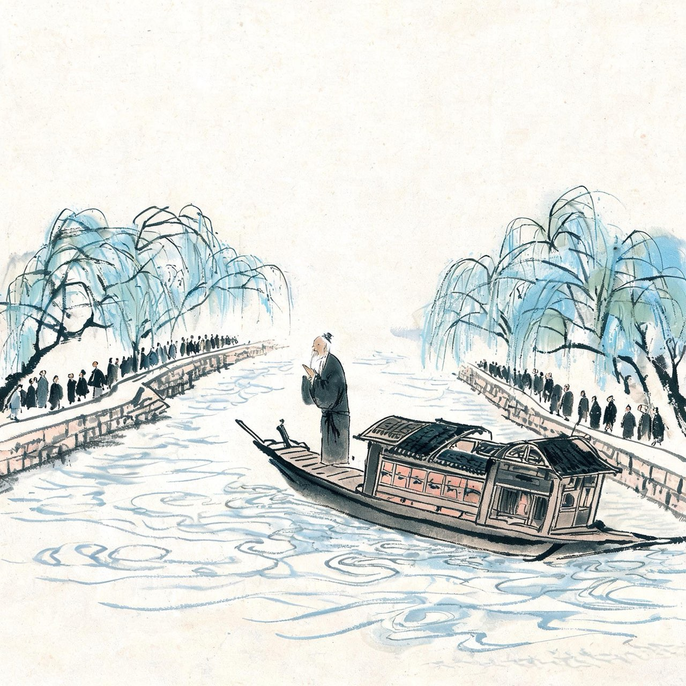
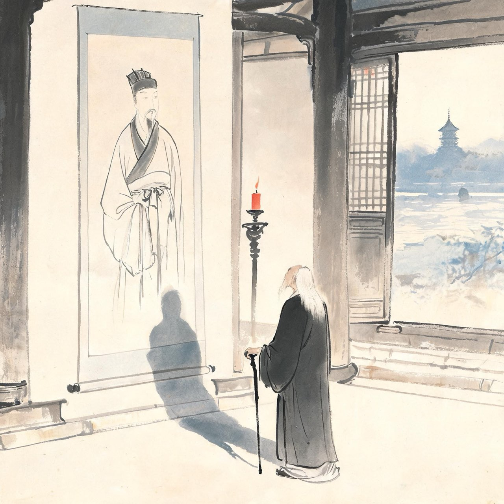
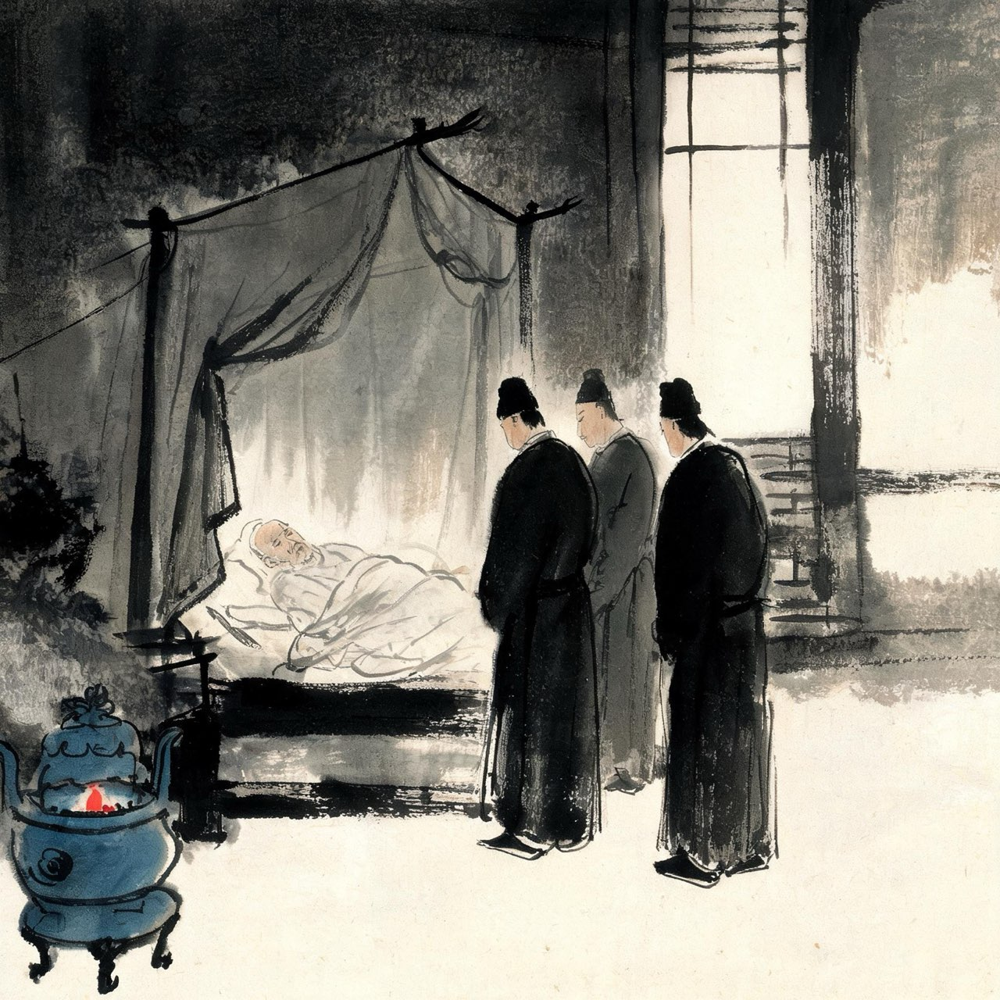
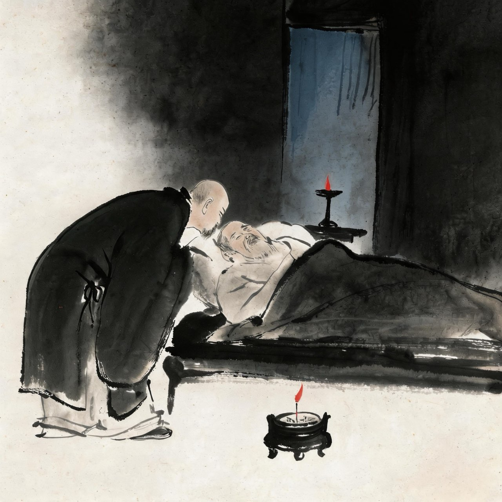

苏轼 · 1100-1101
北归
身如不系之舟

北归
建中靖国元年，苏轼一路北归。
渡海之后，他回望这片流放之地，没有恨——九死南荒，他说那是平生最奇绝的一次游历。
运河两岸，成千上万的人随船而行，只为看他一眼。六十四岁、须发皆白的一代文宗，是天下人心里的活传奇。他自嘲道：莫看杀轼否？
这样的人，这样被天下人捧着看着，却已经是一个被朝廷除名、无官无职的白身。
注
- 莫看杀轼否：出自《邵氏闻见后录》，宋人笔记，细节待校

金山寺·对镜
北归途中，苏轼路过镇江，游金山寺。
寺中挂着画家李公麟为他画的像——那是多年前元祐盛世里的苏轼：乌台、执笔、意气风发的翰林学士。
他在自己的画像前站了很久。画里的人峨冠博带，画外的人形容枯槁。
他提笔在画上题了一首六言诗，短短二十四字，是给自己的悼词，也是给一生的判词。写完搁笔，他的一生，已可交卷。
注
- 画像作者一般认为李公麟，一说画于元祐年间，细节待校
自题金山画像
〔绝笔之作，全篇仅二十四字〕
心似已灰之木，身如不系之舟。
问汝平生功业，黄州惠州儋州。
注
- 平生功业不列翰林不列执政，只列三个贬所——自嘲是表，自许是里：三州正是他文学生命的全部

病骨
六月，苏轼到常州。天气酷热，他自岭海带回的病——瘴毒大发，继而痢疾，腹泻不止。
他自知大限将至。上表朝廷请求致仕（退休）的奏状还在路上，人已卧床不起。
老友维琳方丈从杭州赶来，陪他住在常州宅中，日夜不离。苏轼给他写信，还是那副口吻——语句已虚弱，字还是那个字。
七月，病势沉重。他让三个儿子立在自己床前。

临终
七月二十八日，苏轼弥留。
维琳方丈在他耳边大声说：端明宜勿忘西方——不要忘了往生西方。
苏轼喃喃答：西方不无，但个里着力不得。
钱世雄也凑近说：固先生平时履践至处，更须着力。
苏轼用尽力气回答：着力即差。
说完，阖上眼。是日，卒于常州。
着力即差——他一生随缘任运、自然而然，最后一口气，也不肯用力气去对抗。
注
- 临终对话见于宋人记载，各本文字小异，细节待校
- 苏轼生于 1037 年 1 月，卒于 1101 年 8 月，享年六十四周岁（虚岁六十六）
事件·身后
苏轼去世的消息传出，吴越之民，相与哭于市；讣闻四方，无贤愚皆咨嗟出涕。
遵他遗嘱，葬于汝州郏城县钧台乡上瑞里——不在眉山，不在常州，在离弟弟苏辙墓不远的小峨眉山。兄弟相约晚年被乱世打散，终究葬在了一处。
二十多年后，北宋亡。他生前被封杀的诗文，在他身后反而流传得更广——天下人不敢公开谈论朝政，却无人不读苏东坡。
注
- 葬郏县小峨眉山，苏辙后葬其侧，世称二苏坟
- 南宋孝宗追谥文忠，赠太师
临终前，有人问他平生功业。他说了三个地名。现在，回到二十年前那场雨——
定风波·莫听穿林打叶声（跨越二十年的回响）
莫听穿林打叶声，何妨吟啸且徐行。
竹杖芒鞋轻胜马，谁怕？一蓑烟雨任平生。
料峭春风吹酒醒，微冷，山头斜照却相迎。
回首向来萧瑟处，归去，也无风雨也无晴。
注
- 终章仪式：北归路上忆及黄州旧词，完成全游戏的首尾闭环